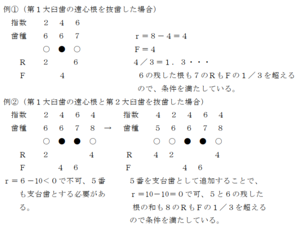
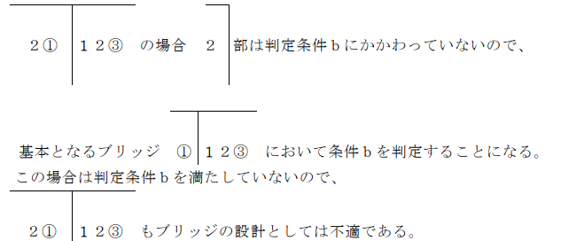

434点
注 レジン前装金属ポンティックを製作した場合は、その部位に応じて次に掲げる点
数を所定点数に加算する。
イ 前歯部の場合 746点
ロ 小臼歯部の場合 200点
ハ 大臼歯部の場合 60点
通知
(１) レジン前装金属ポンティックとは、鋳造方式により製作されたポンティックの唇面又
は頬面を硬質レジンにより前装したものをいう。
(２) レジン前装金属ポンティックを、大臼歯に使用する場合は、咬合面を金属で製作し、
頬面にレジン前装を施した場合に限り認められる。
(３) 延長ブリッジの場合の７番ポンティックは、小臼歯部として扱い、レジン前装金属ポ
ンティックを製作した場合は「ロ 小臼歯部の場合」により算定し、この場合の保険医療材料料については製作したポンティックの種類に応じて、該当する小臼歯の保険医療材料料を算定する。
(４) 可動性固定ブリッジ（半固定性ブリッジ）の可動性連結装置を使用した場合は、区分
番号Ｍ０１０に掲げる金属歯冠修復の「１のロ 複雑なもの」及び区分番号Ｍ００１に掲げる歯冠形成の「３のロ 複雑なもの」を算定する。
(５) ブリッジの製作に当たり、支台歯の植立方向によりポンティックを分割して製作する
ことは認められない。
(６) ブリッジは、次の適用による。
イ ブリッジの給付について
(イ) ブリッジは歯の欠損状況から「ブリッジの考え方2007」（平成19年11月日本
歯科医学会）に示す方法で支台歯数等を定め製作する。
(ロ) 連続欠損の場合は２歯までとする。ただし、中側切歯は連続４歯欠損まで認め
られる。
(ハ) 延長ブリッジは原則として認められないが、第二大臼歯欠損であって咬合状態
及び支台歯の骨植状態を考慮し半歯程度のポンティックを行う場合はこの限りでない。
(ニ) 隣接歯の状況等からやむをえず延長ブリッジを行う場合は、側切歯及び小臼歯
１歯のみ認められる。
(ホ) 第三大臼歯をブリッジの支台歯とする場合は、歯冠、歯根の大きさや形態、傾
斜、転位等を総合的に勘案した上で行う。
(ヘ) 接着ブリッジは、１歯欠損症例において、接着ブリッジ支台歯を生活歯に求め
る場合に認められる。
(ト) 残根上のブリッジは認められない。
ロ ブリッジ設計の考え方
ブリッジの設計は、「ブリッジの考え方2007」（平成19年11月日本歯科医学会）による。
(７) 分割抜歯後のブリッジの製作
イ 第１、第２大臼歯を分割抜歯してブリッジの支台歯とすることは、「ブリッジの考
え方2007」（平成19年11月日本歯科医学会）の「５ 咬合力の負担からみたブリッジの適応症と設計、４）その他（歯根を分割抜去した大臼歯に対するブリッジの適用について）」の項を参照し、残った歯冠、歯根の状態が歯科医学的に適切な場合に限り認められる。なお、上顎第２大臼歯の遠心頬側根抜歯、下顎第２大臼歯の遠心根抜歯の場合の延長ポンティックは認められない。
ロ 分割抜歯を行った場合の指数は、次のとおりとする。
(イ) 下顎の場合、残った歯根はＲ＝２、欠損部をポンティックとしたときはＦ＝４
とする。
(ロ) 上顎の場合、残った歯根は１根につきＲを１とするが、１根のみの支台歯は歯
科医学的に適切ではないので認められない。ブリッジの支台歯となるのは、口蓋根と頬側の１根が残った場合、残った歯根はＲ＝２、欠損部をポンティックとしたときはＦ＝４とする。また、頬側の２根のみが残った場合は口蓋根部のポンティックは必要とされないことから残った歯根はＲ＝２のみとする。
ハ 上顎の第１又は第２大臼歯を３根のうち２根残して分割抜歯してブリッジの支台歯
とする場合は、頬側２根を残した場合は大臼歯として、又頬側いずれか１根と口蓋根を残した場合は支台歯としての小臼歯歯冠修復と小臼歯のポンティックとして算定して差し支えない。単独冠として行う場合は、大臼歯の歯冠修復として算定して差し支えない。
ニ 下顎の第１又は第２大臼歯を近遠心２根のうち１根を残して分割抜歯してブリッジ
の支台とする場合は、１根を支台歯としての小臼歯歯冠修復と小臼歯ポンティックとして算定して差し支えない。単独冠として行う場合は、小臼歯の歯冠修復として算定して差し支えない。
(８) ブリッジを装着するに当たり、印象採得を行った場合は、１装置につき区分番号Ｍ０
０３に掲げる印象採得の「２のニの(１) 支台歯とポンティックの数の合計が５歯以下の場合」又は区分「２のニの(２) 支台歯とポンティックの数の合計が６歯以上の場合」を、咬合採得を行った場合は１装置につき区分番号Ｍ００６に掲げる咬合採得の「２のイの(１) 支台歯とポンティックの数の合計が５歯以下の場合」又は区分番号Ｍ００６に掲げる咬合採得の「２のイの(２) 支台歯とポンティックの数の合計が６歯以上の場合」を、装着した場合は支台装置の装着は１歯につき区分番号Ｍ００５に掲げる装着の「１ 歯冠修復」及び保険医療材料料を、ブリッジの装着は１装置につき区分番号Ｍ００５に掲げる装着の「２のイ ブリッジ」の各区分の所定点数を算定する。
(９) 必要があって根を分離切断した下顎大臼歯を支台歯として使う場合の指数は「６」と
して大臼歯１歯の取扱いとする。ただし、分離切断したのであるから、実態に合わせて指数を減ずることを考慮すべきである。
(10) インレーを支台装置とするブリッジは、窩洞形成を行った場合は区分番号Ｍ００１に
掲げる歯冠形成の「３のロ 複雑なもの」により算定する。なお、全ての支台をインレーとするブリッジは区分番号Ｍ０００－２に掲げるクラウン・ブリッジ維持管理料の対象としないことから、区分番号Ｍ０００－２に掲げるクラウン・ブリッジ維持管理料は算定できない。
(11) 「ブリッジの考え方2007」（平成19年11月日本歯科医学会）の判定条件におけるブ
リッジの１側の支台歯のＲの総計が、隣接するポンティックのＦ及びＦ・Ｓの総計の３分の１以上であるという判定条件ｂは延長ブリッジは適用しない旨のただし書は、延長したポンティックについては片側に支台歯が存在しないのでそのポンティックのバランスは考慮しないとの意である。したがって、
(12) 「ブリッジの考え方2007」（平成19年11月日本歯科医学会）によると延長ブリッジ
の支台歯は２歯以上となっているが、これは回転力を軽減させるためであるから、支台歯が２歯以上であって条件が整っていれば、必ずしも支台歯は連続している必要はない。
(13) 可動性ブリッジ又はインレーを支台とするブリッジの指数は、「ブリッジの考え方 2
007」（平成19年11月日本歯科医学会）に示した当該支台歯の歯種による指数を用いる。
(14) 欠損ではなく、１歯相当分の間隙のある場合のブリッジの設計において、ポンティッ
クは両隣接支台歯の何れかの形態を模して決定するが、その指数は実態に応じ近似の歯種の指数とする。なお、半歯程度の間隙の場合は隙とする。
(15) 有床義歯では目的が達せられないか又は誤嚥等の事故を起こす恐れが極めて大きい場
合であってブリッジを行う以外に方法がないときは、予め理由書、模型及びエックス線フィルム又はその複製を地方厚生(支)局長に提出しその判断を求める。
(16) 低位唇側転位の犬歯の抜歯後に生じた欠損部の間隙が側切歯、あるいはそれ以下しか
ない場合であっても、「ブリッジの考え方2007」（平成19年11月日本歯科医学会）にあるポンティックの抵抗値（Ｆ値）を減じることは適切でない。欠損部の間隙が側切歯半歯以下の極めて小さい場合は、側切歯又は第一小臼歯、あるいは双方の歯冠幅を僅かずつ拡大して歯冠修復を行い、場合によっては補綴隙等を行うことにより対応する。犬歯のポンティックが必要な場合で、中切歯が既にブリッジの支台として使用されている等の理由で新たに支台として使用できない場合に限って、ブリッジの設計を「②３④⑤」に変更することは差し支えない。この場合において、診療報酬明細書の摘要欄に中切歯の状況等を記載する。
(17) 側切歯及び犬歯又は犬歯及び第一小臼歯の２歯欠損であって、犬歯が低位唇側転位し
ていたため間隙が１歯分しかない場合に限り、ポンティック１歯のブリッジとして差し支えない。ただし、製作するブリッジのポンティックの形を側切歯とするか犬歯とするかはそれぞれの症例によって異なるものと思われるが、形の如何によらずポンティックの抵抗値（Ｆ値）は犬歯の「５」として設計する。この場合において、診療報酬明細書の摘要欄に低位唇側転位の犬歯を含む欠損歯数と補綴歯数の不一致の旨記載すること。
(18) 矯正・先天性欠如等により、第一小臼歯が既に欠損している患者の第二小臼歯を抜歯
した場合あるいは第二小臼歯が舌側に転位しているとき、第一小臼歯及び第二小臼歯を抜歯した場合で、間隙は１歯分しかないような小臼歯２歯の欠損であって間隙が狭い場合のブリッジは、「ブリッジの考え方2007」（平成19年11月日本歯科医学会）に従って実際の歯式どおり対応する。
(19) 次に掲げるブリッジの設計は原則として認められないが、歯科医学的に妥当であると
考えられる場合には、保険適用の可否を確認することになるので、予め理由書、模型及びエックス線フィルム又はその複製を地方厚生(支)局長に提出してその判断を求める。また、添付模型の製作は、基本診療料に含まれ、算定できないが、添付フィルム又はその複製は、区分番号Ｅ１００に掲げる歯、歯周組織、顎骨、口腔軟組織及び区分番号Ｅ３００に掲げるフィルムにより算定して差し支えない。ただし、算定に当たっては、診療報酬明細書の摘要欄に算定の理由を記載する。
イ (18)と同様の理由で第一小臼歯、第二小臼歯、第一大臼歯欠損のブリッジにおいて、
欠損歯数は３歯であるが、間隙のほうが１歯分程度小さく２歯分となる場合
ロ 移植後一定期間経過した移植歯を支台歯とする１歯欠損症例のブリッジであって、
骨植状態が良好であり、咬合力の負担能力が十分にあると考えられる場合
(20) ６⑥⑦及び⑤⑥６のような分割延長ブリッジは原則として認められないが、前者は隣
接する第二小臼歯が前方ブリッジの支台歯となっているか又は同歯にメタルボンド冠が装着されている症例、後者は隣接する第二大臼歯に金合金又は白金加金の全部金属冠が装着されている症例であって、補綴物を除去し、当該歯をブリッジの支台歯として使用することが困難であるため、当該歯の補綴物にレストを設定することによりブリッジの維持を求める構造となる場合はこの限りでない。ただし、レストの設定に係る費用は算定できない。